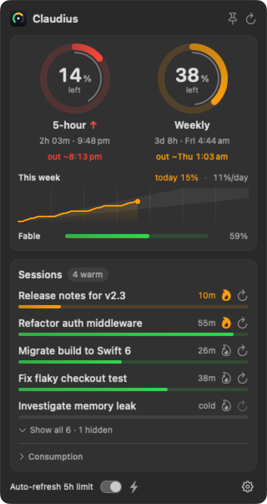
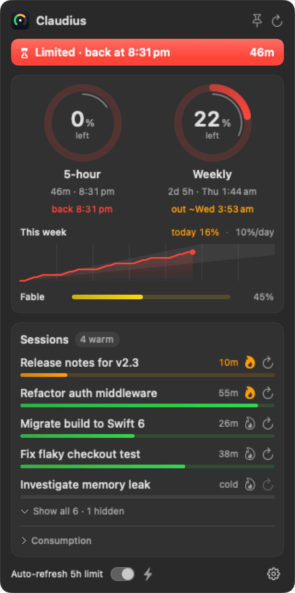
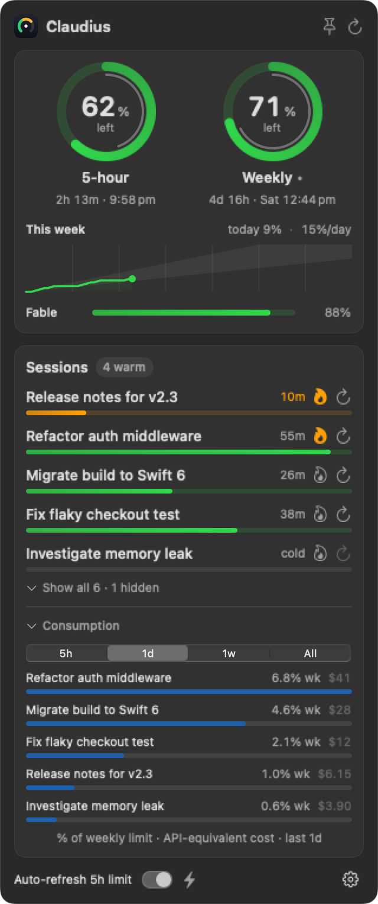

Never get surprised by a rate limit again
Everything Claude Code's /usage shows, always on — plus the answers it doesn't give you.
Run-out forecast
"out ~8:07 pm" appears the moment your pace means you'll hit the limit before it resets.
Weekly budget
Today's usage and an even per-day budget to last until the weekly reset, on a trend line of your week.
Limit alerts
Native notifications when a limit runs low, when you hit it, and when it's back.
What's eating your quota
Sessions ranked by their share of your weekly limit, over the last 5 hours, day, week or all time.
Cache keep-alive
Keep a long chat's prompt cache warm so it resumes fast — and never waste usage warming a dead one.
Your menu bar, your way
Badges, rings or plain numbers. Optional auto-refresh starts a fresh 5-hour window the minute the last resets.
Tells you what to do next
Quiet when you're fine. Specific when you're not.



100% local. No account.
Claudius reads the sign-in Claude Code already keeps on your Mac. It never sees your password, has no server, and sends no telemetry.
- Token read from your macOS Keychain, where Claude Code stores it
- Session details read from your local
~/.claudetranscripts - The only network call is to Anthropic's own usage endpoint
- MIT-licensed — exactly what it reads, sends and stores
FAQ
How do I check my Claude Code usage limits?
Claudius shows the same numbers as Claude Code's /usage command, always on in your menu bar: how much of your 5-hour and weekly limits is left, and when each resets. The bundled claude-usage command prints the same data in the terminal.
When does the Claude Code 5-hour limit reset?
The 5-hour window starts with the first message you send and resets five hours later. Claudius shows the countdown and the exact reset time, and can start the next window automatically the minute the last one resets.
How do I see my Claude weekly limit on Pro or Max?
Claudius shows how much of the weekly limit is left, the reset day and time, today's usage, and an even per-day budget for the rest of the week — plus model-specific weekly limits when your plan has them.
Will I hit my Claude Code limit before it resets?
Claudius projects your pace forward. If you'll run out before the reset it shows when, and sends a running-low alert at 20% left. If you'll make it, it stays quiet.
Do I need to log in?
No. Claudius reads the sign-in Claude Code already stores in your Keychain. If that ever expires, a Sign in button runs Claude Code's own login and Claudius picks it up automatically.
Is there a Windows or Linux version?
Not yet — Claudius is a native macOS app.